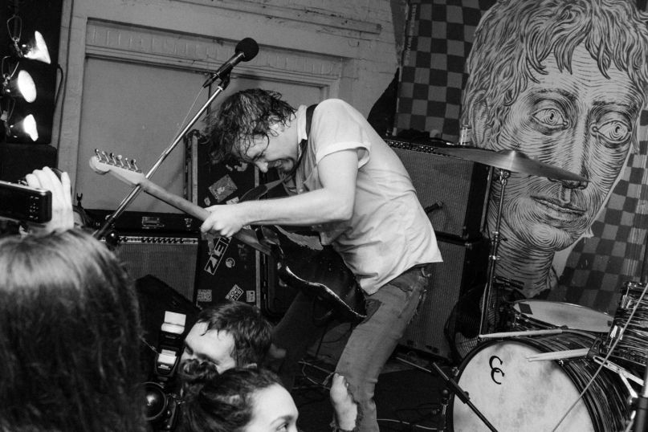

My Hobbies & Interests
Hobby 1: Basketball
When I began focusing on improving my game in basketball, I enjoyed watching and modeling my game after Allen Iverson. He is known for his shifty handles and proficient scoring, all while being only 6 foot in a world of giants. He was also known for being a fashion icon, expressing himself both in and out of the game. This self expression is what allowed me to adopt my own personal style in fashion and in basketball!
Hobby 2: Fashion
As for fashion, I love Rick Owens. Rick Owens is a high end fashion designer, known for the abstract silhouettes he creates while using high quality materials. His unusual approach to fashion is what inspires me to think outside of the box when it comes to not only creating outfits, but in my general creativity!
Hobby 3: Music
Out of all my hobbies, music is my favorite. Both of my parents loved music, so it was natural for me to feel the same way. What caught me on at an early age was the instruments and how much they add and can change a song. The abstract and personal sounds that artists make bring me joy no other hobby has yet. Each artist has their own unique sound that can and will inspire other artists to take a piece of one’s work, and implement it into their own music.